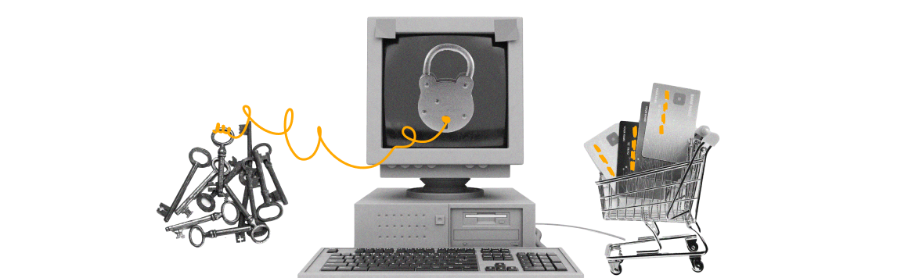

модуль 7. додаткові практики онлайн безпеки
- які є практики безпеки для захисту від онлайн-булінгу?
- яка небезпека криється в публічних мережах wi-fi?
- чи безпечні ваші онлайн-покупки і фінансові транзакції?
- як виявити і куди повідомити про онлайн-шахрайства?
Використовуйте скрол